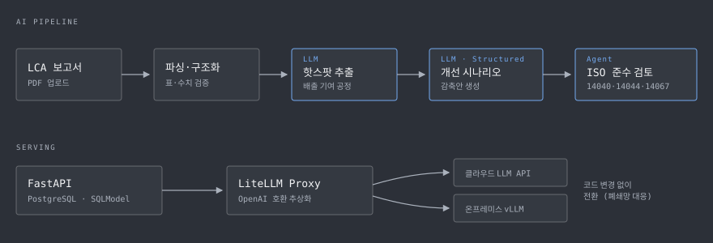

1특허 출원 — 제1발명자
13API 라우터 — 실보고서 E2E 검증
3ISO 표준 자동 검토
0클라우드↔온프렘 전환 코드 변경
S배경 — 전문가의 수작업에 갇힌 LCA
제품 하나의 탄소발자국을 산정하려면 수십~수백 페이지의 LCA 보고서를 읽고, 배출 기여가 큰 공정을 찾고, 감축 시나리오를 세우고, ISO 14040/14044/14067 요구사항에 맞는지 검토해야 합니다. 전 과정이 소수 전문가의 수작업이라 느리고, 비싸고, 사람마다 결과가 다릅니다. 이 병목을 LLM 파이프라인으로 푸는 것이 과제의 목표입니다.
T역할 — 백엔드와 AI 파이프라인 전담
담당백엔드 · AI 파이프라인 설계/구현
협업별도 웹 프론트엔드 팀과 API 계약
기간2025.05 — 진행 중
특허출원 10-2026-0139153 (제1발명자)
A설계와 구현

01LCA 개선 시나리오 AI
- LCA 보고서 PDF를 업로드하면 탄소 배출 기여도가 큰 공정(핫스팟)을 자동 추출하는 파이프라인 구현
- 추출된 핫스팟을 근거로 LLM이 감축 개선 시나리오를 생성 — Structured Output으로 스키마를 강제해 후속 단계에서 바로 소비 가능한 형태로 반환
- 비정형 PDF의 표·수치 파싱 오류에 대비한 단계별 검증과 예외 처리로 파이프라인 신뢰성 확보
02ISO 표준 준수 검토 에이전트
- 생성된 시나리오와 보고서를 ISO 14040 / 14044 / 14067 요구사항에 대조해 준수 여부를 검토하는 에이전트 설계·구현
- 표준 원문에서 검증 가능한 요구사항 트리를 선별·구조화하고, 항목별 근거를 함께 반환해 검토 결과를 추적 가능하게 설계
03NL2SQL 자연어 검색
- "작년 배출량이 가장 큰 공정은?" 같은 자연어 질의를 SQL로 변환해 LCA 데이터베이스를 조회하는 API 구현
- 스키마 컨텍스트 주입과 결과 재검증으로 잘못된 쿼리 생성을 방어
04LLM 서빙 인프라
- LiteLLM 프록시(OpenAI 호환)로 LLM 벤더를 추상화 — 클라우드 API와 온프레미스 모델을 코드 변경 없이 전환
- 보안 요건이 있는 고객 환경을 위해 온프레미스 GPU 서버에 vLLM으로 오픈소스 모델을 서빙하고, 전체 API를 실제 LCA 보고서로 회귀 검증
R결과
- 13개 API 라우터 전부를 실제 제품 LCA 보고서 기준으로 E2E 검증, 외부 기술교류회에서 데모 시연
- 클라우드 LLM ↔ 온프레미스 vLLM 전환 검증 완료 — 폐쇄망 고객 대응 가능한 구조 확보
- 특허 출원 — 「탄소감축 시나리오 간 상호작용 자동 판정 및 표준 동등성 검증을 이용한 전과정평가 보고서 자동 저작을 위한 장치」 (10-2026-0139153, 제1발명자)
W기술 선정 이유
FastAPI + SQLModel비동기 LLM 호출과 타입 안전한 스키마를 한 번에 — Pydantic 모델을 API 계약과 DB 모델에 공유
LiteLLM Proxy고객사마다 다른 LLM 요구(클라우드/폐쇄망)를 코드가 아닌 설정으로 흡수하기 위한 벤더 추상화 계층
vLLM온프레미스 GPU에서 오픈소스 모델을 OpenAI 호환 API로 서빙 — LiteLLM 뒤에 그대로 꽂히는 조합
pytest + GitLab CILLM 파이프라인 회귀를 실보고서 기반 E2E 테스트로 잡는 안전망
+회고 — 다시 한다면
- PDF 파싱 실패 케이스를 그때그때 고치는 대신, 실패 사례를 평가셋으로 축적해 파서 개선을 정량화했을 것
- ISO 요구사항 트리의 커버리지(전체 요구사항 대비 검증 가능 항목 비율)를 지표로 관리해 검토 신뢰도를 수치로 말할 수 있게 했을 것
* 국가 R&D 과제 수행 중인 사내 프로젝트로 코드·데모는 비공개입니다.